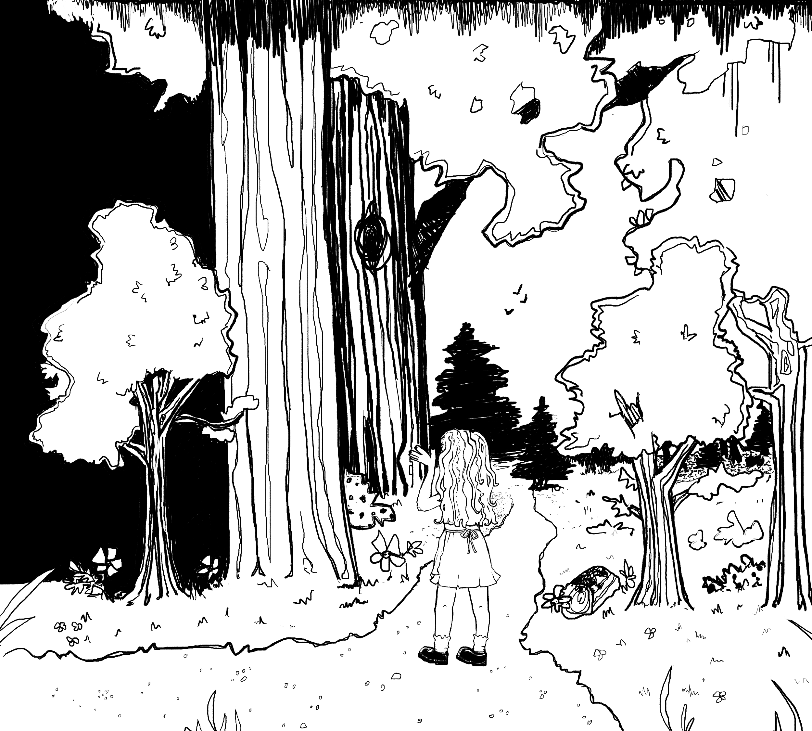
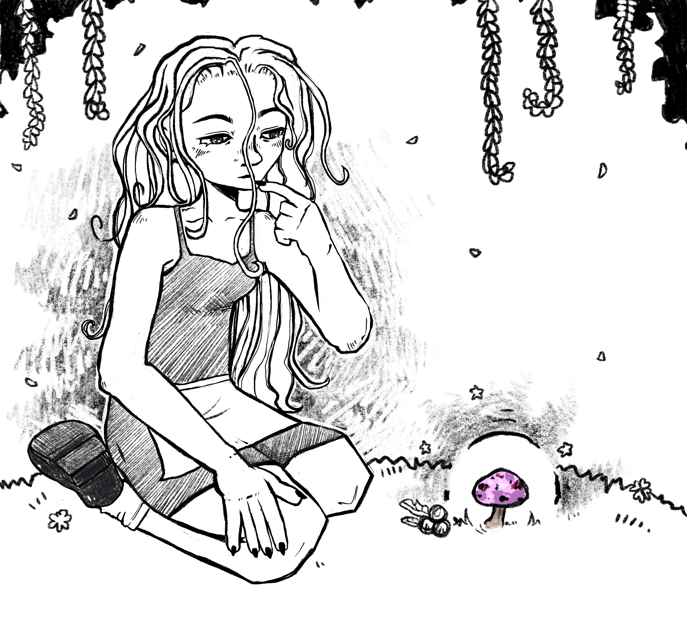
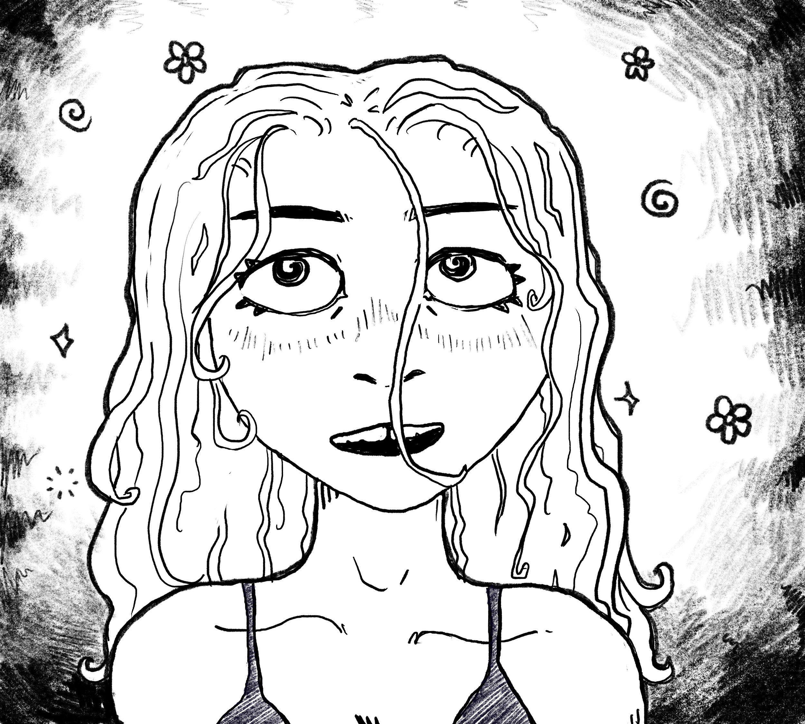
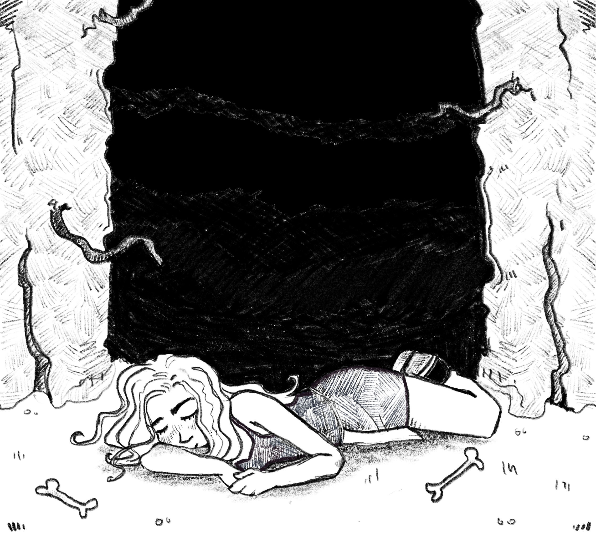
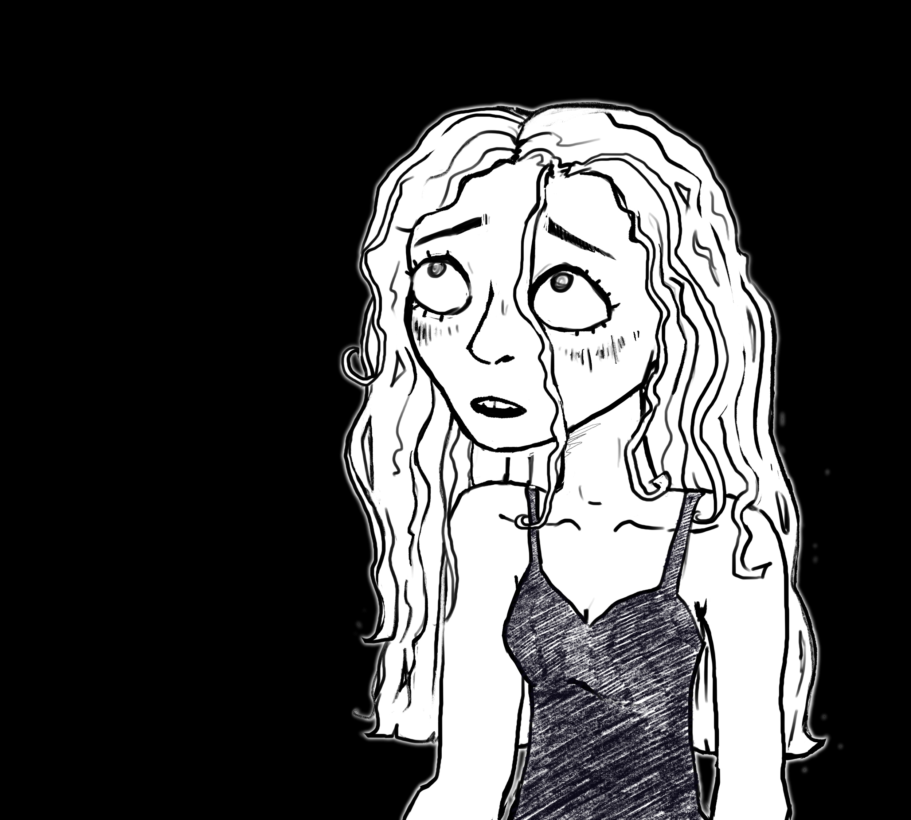
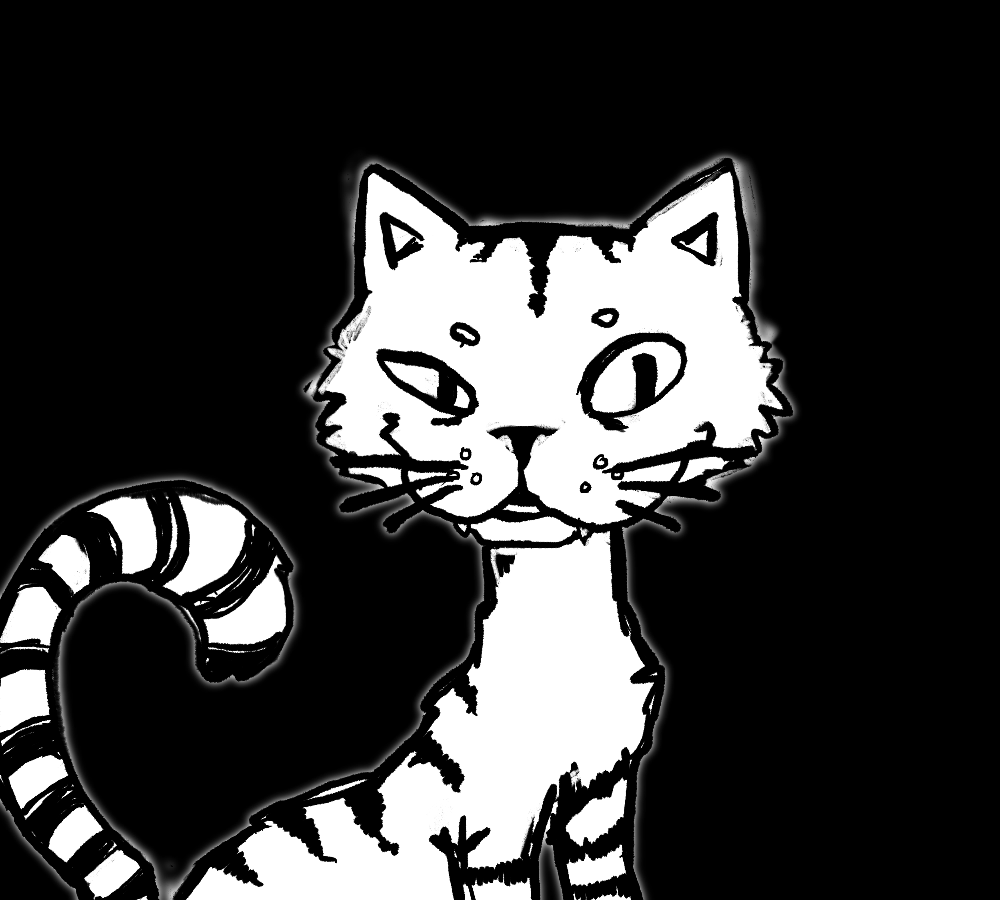
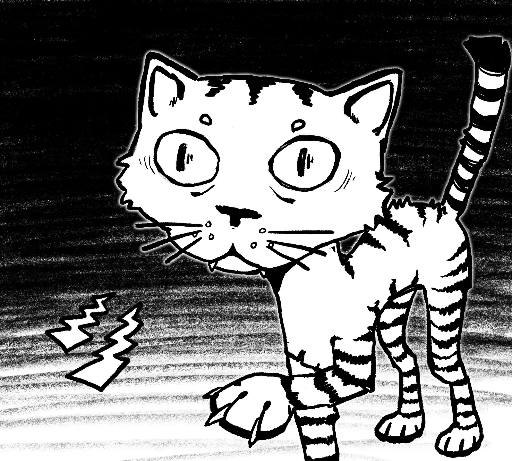

PRologuE
In the mystical depths of the woods,
where majestic trees stood tall and graceful, their branches reaching skyward,
a curious soul named Alice sought refuge from reality,
if only for a short while.
- 
Venturing deeper into the woods,
Alice stumbled upon a clearing, illuminated by an ethereal glow.
In its center stood a peculiar mushroom, its allure irresistible. Driven by curiosity,
she took a bite, hoping to satisfy the hunger that had gripped her.

- 
For a fleeting instant, Alice basked in the tranquil serenity of her thoughts.
Yet, with each passing minute, an unsettling discord began to overshadow her.
Paranoia seeped into her senses, transforming the harmonious forest symphony into a relentless, ticking clockwork.
- 

The air thickened with an unspoken dread, as the trees cast shadows upon the once serene scene.
The once tame sentinels pointing to the heavens, now seemed to fixate on Alice with their hollow gazes and reaching arms.
Their elongated shadows encroached upon her, growing larger and darker with each passing moment until they’d encompass everything within Alice’s view.
Panic seized Alice in its relentless grip before everything was overtaken by void, sending Alice into a freefall.
ChapTer 1
As Alice plummeted through the void the air around her chilled, and the wind began to whisper.
Abruptly, she landed in a nightmarish landscape, where twisted,
decaying trees with branches that resembled gnarled claws loomed overhead,
similar to the ones from moments ago, aside from being motionless for the time being.
- 

Alice was no longer where she knew, the forest around her was far too thin.
Nevertheless, overwhelming. Now, looking up, she could see the omnipresent orange sky above.
Its heavy, static, and despairing presence made it indistinguishable whether it was dusk or dawn,
further adding to Alice’s disorientation and demorale.
The air was thick with an unsettling fog that clung to the shadows like a malevolent spirit on the forest floor, which itself seemed never ending.
A faint and quick rattle could be heard in the distance for a brief moment before silencing itself.
Biting her nails, Alice reluctantly rose from the cold, damp ground.
Her surroundings cloaked in an unyielding expanse of decay. She’d start to wander through the spanning ocean of rot. In silence; adding to her feeling of paranoia.
But though silent, this ocean of rot, much like its aqueous counterpart, concealed a myriad of unseen events beneath its eyeshot surface.
Alice, unable to shake off the lingering feeling of being watched, moved cautiously through this nightmarish realm,
unsure of what twisted secrets lurked in the shadows or what grotesque specters might rise from the depths of this eerie ocean of decay.
The silence pressed upon her like an oppressive force, it was far from an absence of events.
It was a deceptive calm. Every step Alice took sent unsettling echoes through the decaying remnants of twisted vegetation,
and almost as if in reply, this time echoed back another faint rattle, yet again suppressing itself before long.
This time seemingly closer, or perhaps just an effect of Alice’s paranoia.

As time continued to warp around Alice through the forest, the dread in her chest tightened with every step, and the silence now felt like an ominous prelude to an impending terror.
Rhythmic with her pacing distant rattles persisted every now and then, each one sending a stronger shiver down her spine.
Still unsure if it was the echo of her own fear or a malevolent presence drawing nearer, she quickened her pace, only to be met with another rattle,
unmistakably closer this time. Each step Alice took was now accompanied by the haunting percussion of her unseen pursuer. Panic clawing at her mind.
Drag to help Alice run!!! ( meters)
Accompanied by this dread the forest seemed to tighten its grip on Alice restricting her to one direction of travel.
The unseen presence closing in from behind like a relentless nightmare unaffected by the woods.
The rattling inched closer, and closer, and closer, gaining on Alice, creating an unnatural tension.
She frantically pushed forwards, breathlessly, but the rattles persisted, growing more sinister before finally reaching a climax as Alice stumbled in exhaustion.
In the eerie stillness of Alice’s fatigue a final rattle cut through the air, right past her placing itself in front of her,
plunging Alice into a heart stopping realization that whatever tailed her from the shadows was now poised to reveal itself.
A slower, chain-like rattle rang from behind a tree, and then emerged a floating spine led by two deep enormous glowing eyes which began to formulate from nothing right before her.
Finally an elongated grin composed of sinister sharp teeth materialized, and slowly thereafter was the decomposed figure of a feline,
devoid of vibrancy and drowned in a sense of lifelessness. This beast took the form of a rotten withering cat. To Alice’s dismay the creature then prompted her,
“Why the long face Alice…”
In a raspy hollow voice.
“I’m here to help you..”
“It’s me.”
Its mouth’s form, unaltered.

ChapTer 2
Despite the cat’s unsettling and ghastly presence its words rang with a twisted kind of familiarity, lacing itself with a sense of comfort and a promise of guidance.
After a brief moment of thought, with the influence of her helplessness and the deception within the cat’s words, Alice entertained its dialogue..
“Who are you?”
She asked as her voice trembled, and understandably so, with her eyes fixated on the aberration that stood in her path.
The Cheshire Cat’s grin widened showing further its rows of jagged teeth as it gave Alice a reply.
“Alice, my dear.” It hissed.
- 
- 
“I am here to guide you through the labyrinth of terrors that await you from this point on.
Without my help you’ll lose your soul as it hollows the longer you remain here in this twisted wonderland.”
Despite all the warning flares raised by her eyes Alice couldn't help but feel a flicker of hope at the Cheshire Cat's words.
She thought naively, perhaps, this strange creature could lead her to safety and out of this nightmarish realm.
“Please! Do help me get out of here and back home.”
Alice beckoned with desperation creeping into her voice as she looked to the Cheshire Cat for salvation.

The cat’s eyes gleamed brightly as it let off a mischievous nod.
"Why of course, my dear Alice. Follow me, and I shall lead you to sanctuary, but first we must retrieve something from the teaparty, not far from here."
Alice nodded back and fell into step behind the Cheshire Cat as she followed the feline deeper into the twisted and foreboding foresting.
As they walked, Alice noticed the forest no longer felt like it was repeating itself so long as she followed the Cheshire Cat.
Did the forest warp at the cat's will, or did the cat know how to traverse this realm in a way of which she did not yet?
No matter, Alice felt progression with each step she took, lured behind the feline.

As they journeyed deeper into the heart of darkness, the forest seemed to come to life. The air still chilled, was much fresher, and the oppressing orange sky faded to a cool mystic purple.
Though still unclear whether it was to be day or night. The grass matching of a similar colour.
No longer was it rotting, and there was some vegetation. Notably as Alice and Cheshire cat walked past flowers spaced across the forest floor,
Their petals varied in colours, and they’d bloom to reveal eyeballs in their center, observing Alice and her soul walk by before closing themselves yet again as the distance grew between them.
The only thing that hasn’t seemed to change was the Cheshire Cat and its grin, never faltering as it continued to lead Alice, trotting through the forest, rattling with every step.
As they ventured deeper into the woods, Alice's senses remained on high alert, her every nerve tingling with apprehension.
Her doubts grew, but the Cheshire Cat's unwavering grin served as a twisted reassurance with the promises of safety and salvation.
Finally, after what felt like an eternity of wandering through the twisted forest, they arrived at their destination; the teaparty.
A clearing in the woods adorned with a mismatched array of dilapidated furniture.
Before entering the clearing the Cheshire Cat looked to Alice, its grin finally turning to warn her about the dangers of the teaparty..
“Beware, Alice,“
It warned with a deeper voice,
“The Mad Hatter is not one to be trifled with. He can be very dangerous, and has a short temper. It is in our best interests to avoid upsetting him my dear.”
- 
Alice led the way into the clearing and towards the teaparty.
As she inched closer, delaying each step as much as possible, she saw sitting at the head of the long table opposite to her, a tall lengthy figure overseeing the teaparty.
His twitchy movements and the patchy, ripped, mismatched fabrics of his oversized clothes added to his unsettling appearance.
The brim of his hat obscured his eyes, lending him an air of mystery and calmness that sharply contrasted with his erratic behavior and imposing physique.
"Ah, Alice has finally graced us with her presence!" the Mad Hatter exclaimed, his voice of madness.
"Do join us for tea, won't you?" he beckoned.
“I- I- suppose I could,” She replied.
Nervously, she took a seat, at last solidifying her place within the teaparty.
Alice rudely averted her gaze from the gathering to search for comfort in the Cheshire Cats companionship only to realize his lack of presence.
He had seemingly vanished, abandoning Alice.